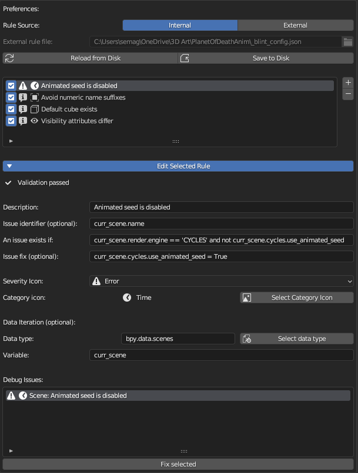

Rule Creation
Before you can create your own rules, you must create a config file to store them and reference said file in your add-on preferences. Create an empty “.json” file wherever you would like your rules stored.
See LintRules in Rules and Issues for more details on rule attributes and settings.
Preferences
You can edit rules from the preferences window. Just click the button dropdown “Edit Selected Rule” to view the rule values.
Again, refer to LintRules in Rules and Issues for more details on each field.
Rule Creation Tips
Blender can help you find a property’s name! Hover over a given property, right click and select “Copy Data Path” or “Copy Full Data Path”. You can use this values in your form. Consider getting the path from Cycle’s preview samples property: - “Copy Full Data Path” results in
bpy.data.scenes["My Scene"].cycles.preview_samples- this is saying: go to my list of scenes, find the one named “My Scene”, and access its Cycles preview samples property. - “Copy Data Path” results incycles.preview_samples- notice the lack of scene specification. While this does not say what these attributes belong to, it’s briefer and closer to what you need for a rule. Using the above data paths as an example, if your iterable expression isbpy.data.scenesand your variable name isvar_scene, then the reference you can use in an issue expression or fix statement for any given scene isvar_scene.cycles.preview_samples.Use the bpy.context module to get data relative to the current user state (
bpy.context.scenegets the currently visible scene, for example). For data that’s project-wide, use the bpy.data module. For the icons, you can find a list of the Blender icons and their names from the built-in Blender addon, “Icon viewer.”If you want a fix to match a change you have made in a Blend file, you can open Blender’s “Info” editor window to see a list of actions you have done as a reference. It is even written like Python code!
All the fields are checked for
exec()oreval()to limit potential security vulnerabilities. However, these rules evaluate real Python code, so exercise caution when using others’ rule configs.